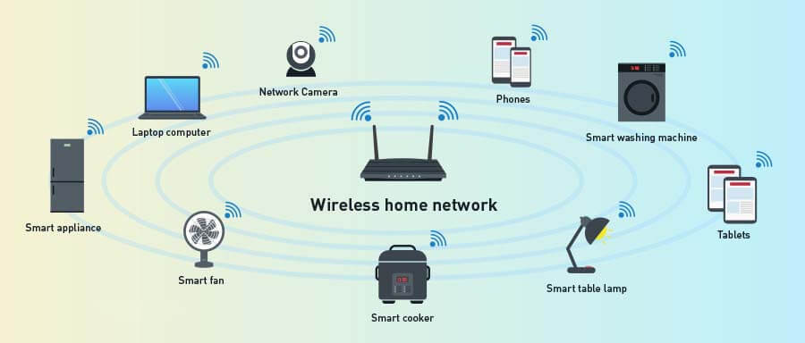
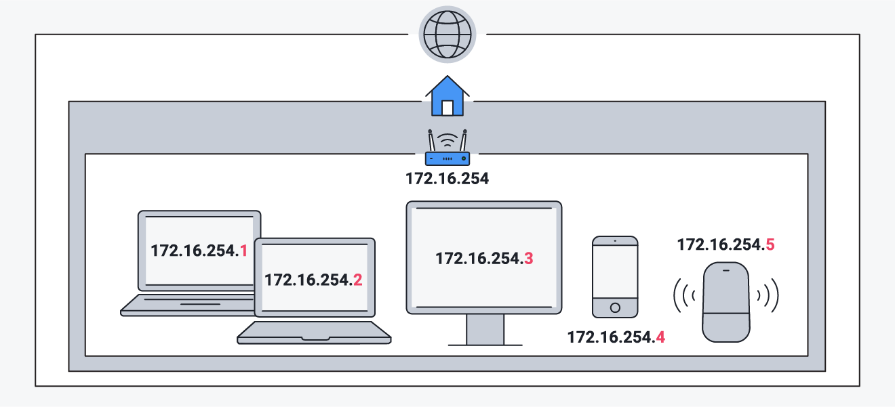
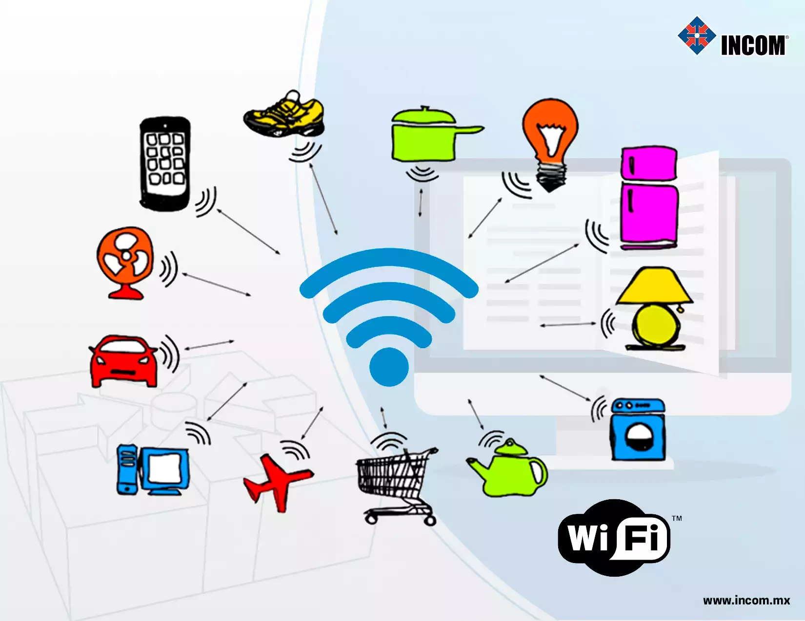
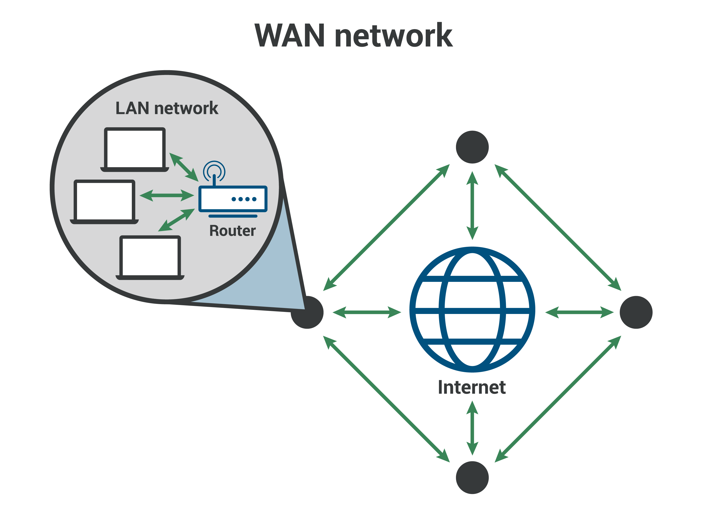
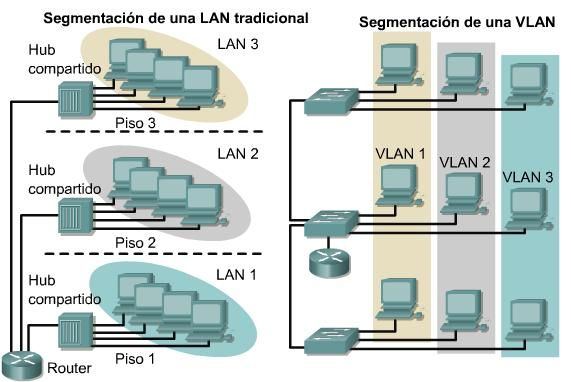
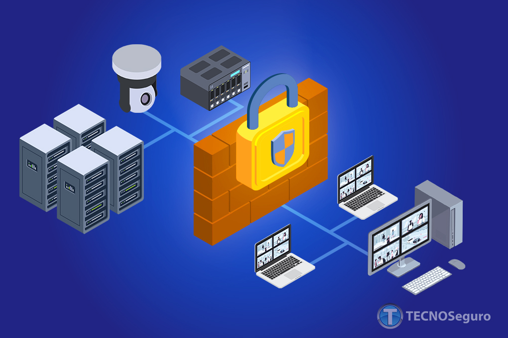
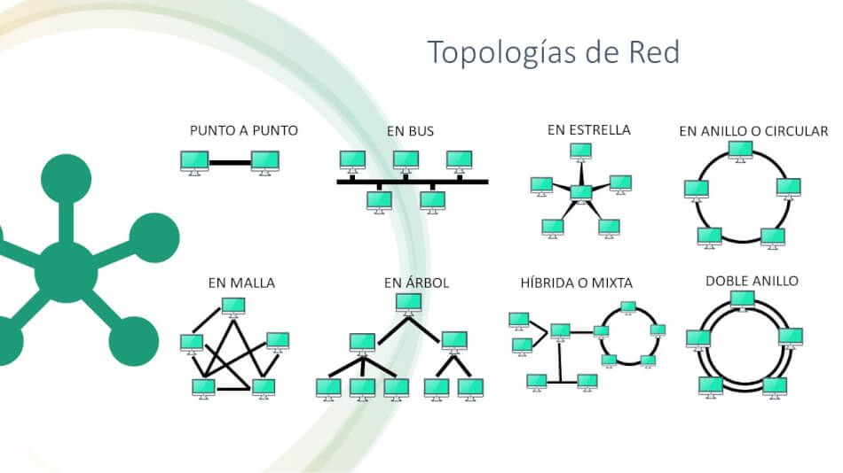

Entiende los fundamentos para conectar el mundo digital.
¿Qué es una Red Informática? La Guía Definitiva

Los Componentes Esenciales de una Red Doméstica

Entendiendo las Direcciones IP: La Identidad de tus Dispositivos en la Red

¿Qué es el Wi-Fi y Cómo Funciona?

Glosario de Términos de Redes: Conceptos Clave Explicados

Introducción a los Switches y VLANs: Optimizando tu Red

Seguridad en Redes: Implementando un Firewall - Tu Primera Línea de Defensa Digital
